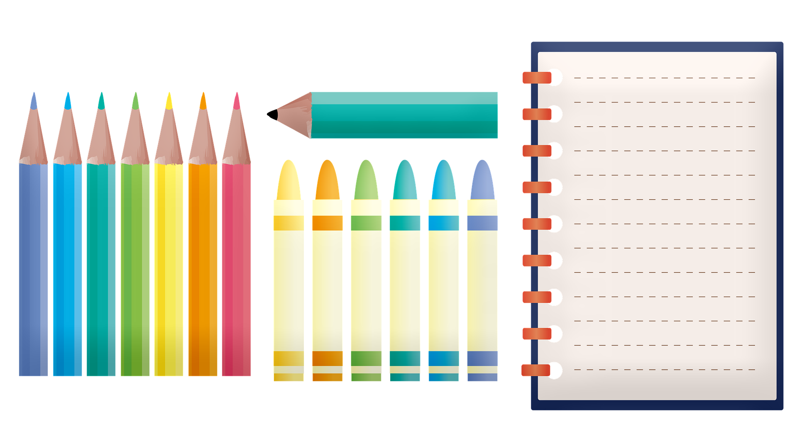

Problem
Mr. Cameron has $100 to spend on school supplies for his classroom. His students need pencils, erasers, binders, lined paper, whiteboard markers, and crayons. When he looks through the catalogue, he discovers that the items he needs are only available in packages. The table below shows the prices.
| Supplies | Amount per Package | Cost per Package |
|---|---|---|
| pencils | 10 | $0.50 |
| erasers | 12 | $1.00 |
| binders | 25 | $5.00 |
| lined paper | 100 | $1.50 |
| whiteboard markers | 4 | $4.00 |
| crayons | 24 | $1.00 |
Mr. Cameron has 20 students in his class. Each student needs 5 pencils, 2 erasers, 5 binders, 50 sheets of lined paper, 1 whiteboard marker, and 1 entire package of crayons. Mr. Cameron needs 8 whiteboard markers himself.
Does Mr. Cameron have enough money to buy all of his classroom supplies? Justify your answer.
If he does have enough money, how much is leftover from the $100? If he does not have enough money, how much more would he need?
Solution
A) To solve this problem, we need to determine how many packages of each supply are needed in order to have enough for all 20 students in Mr. Cameron’s class.
Since there are 10 pencils per package and each student requires 5 pencils, then 1 package of pencils is enough for \(10 \div 5 = 2\) students. Since there are 20 students in the class, Mr. Cameron needs \(20 \div 2 = 10\) packages of pencils.
Alternatively, since there are 20 students, and each student needs 5 pencils, then Mr. Cameron needs \(20 \times 5 = 100\) pencils. Since each package has 10 pencils, he needs \(100 \div 10 = 10\) packages of pencils.
Similarly, we can calculate:
1 package of binders is enough for \(25 \div 5 = 5\) students, so he requires \(20 \div 5 = 4\) packages of binders.
OR
Mr. Cameron needs a total of \(20 \times 5 = 100\) binders, which means he requires \(100 \div 25 = 4\) packages.1 package of lined paper is enough for \(100 \div 50 = 2\) students, so he requires \(20 \div 2 = 10\) packages of lined paper.
OR
Mr. Cameron needs a total of \(20 \times 50 = 1000\) sheets of paper, which means he requires \(1000 \div 100 = 10\) packages.
Also, 1 package of erasers is enough for \(12 \div 2 = 6\) students. This means we need \(20 \div 6 = 3\) packages with a remainder of 2. So 3 packages would not have enough erasers for the class, and thus we need to round up to 4 packages.
Alternatively, we need \(20 \times 2 = 40\) erasers, which means we require \(40 \div 12\) packages, which is equal to 3 packages with a remainder of 4, and thus we round up to 4 packages. Both calculations determine that we require 4 packages of erasers. Note that the remainders are different, because in the first division we are calculating a number of students and in the second division we are calculating a number of erasers.
Since each student needs just 1 whiteboard marker, we require \(20 \div 4 = 5\) packages for the students. However, since Mr. Cameron needs 8 markers himself, that would require 2 more for a total of 7 packages of markers.
Alternatively, we need \(20 + 8 = 28\) whiteboard markers in total, which means we require \(28 \div 4 = 7\) packages.
Finally, we need 1 package of crayons for each student, which is a total of 20 packages.
Now we can make a new table knowing how many packages of each supply are required for the class. We can multiply the number of packages by the cost per package for each of the supplies.
| Supplies | Number of Packages | Cost per Package (in $) | Total Cost (in $) |
|---|---|---|---|
| pencils | 10 | 0.50 | \(10 \times 0.50 = 5.00\) |
| erasers | 4 | 1.00 | \(4 \times 1.00 = 4.00\) |
| binders | 4 | 5.00 | \(4 \times 5.00 = 20.00\) |
| lined paper | 10 | 1.50 | \(10 \times 1.50 = 15.00\) |
| whiteboard markers | 7 | 4.00 | \(7 \times 4.00 = 28.00\) |
| crayons | 20 | 1.00 | \(20 \times 1.00 = 20.00\) |
So the total cost of supplies is: \[5.00 + 4.00 + 20.00 + 15.00 + 28.00 + 20.00 = \$92.00\]
B) Since Mr. Cameron has $100 to spend, he has enough for these supplies with \(\$100 - \$92 = \$8\) left over.
Teacher’s Notes
When we are solving this problem, essentially we need to find equivalent ratios. We have been told the ratio of one student to a number of pencils, erasers, binders, sheets of paper, whiteboard markers, and crayons. We need an equivalent ratio for 20 students to amounts of each of those items.
For example, with pencils we want a ratio of \(1:5\), so we need an equivalent ratio \(20:x\).
Now we just need to solve for \(x\).
One technique for finding equivalent ratios is to rewrite the ratios as fractions.
For example, the ratio \(1:5\) can be written as the fraction \(\tfrac{1}{5}\).
So now we just need to solve the equation:
\[\dfrac{1}{5} = \dfrac{20}{x}\]
If we have two fractions that are equal, that means the products of the numerator of one and the denominator of the other are equal. This is sometimes referred to as cross-multiplying. In this example it means:
\[1 \times x = 5 \times 20\]
So,
\[x = 100\]
This means we need 100 pencils to supply the whole class.